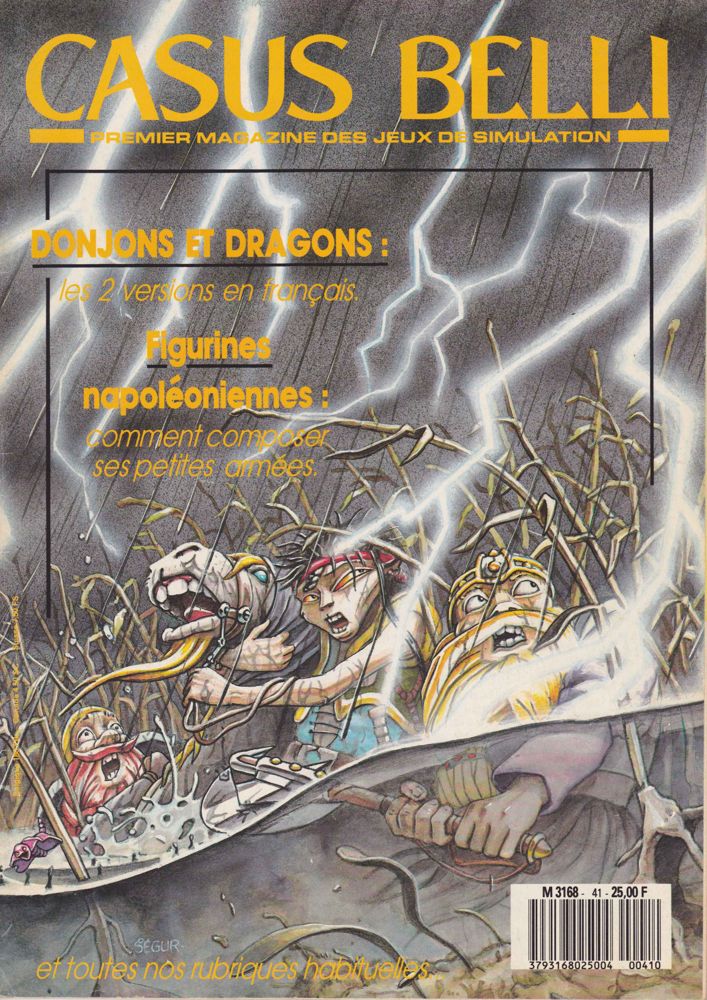

Or donc je vous propose de reprendre les clés de la Delorean pour refaire un tour vers cette fin d’année 1987 (parution indicative de ce numéro vers fin octobre / début novembre ?), avec un numéro sous une magnifique couverture de Ségur car on est au moment de la sortie du premier tome de Légendes des Contrées Oubliées (le scénariste Bruno Chevallier n’est pas en reste car on trouvera aussi dans ce numéro un encart de 4 pages BD sur le thème de Car Wars scénarisée par lui – l’illustrateur est en revanche loin d’être au niveau de Ségur 😄 )

(j’ai repiqué l’image de la couverture sur Rakuten où on peut acheter l’exemplaire à un prix pas déconnant)
Un petit topo de cette fin d’année 1987 pour commencer car après un été - rentrée relativement calme dans les tumultes de la planète, l’actualité s’emballe à nouveau. Il est déjà question de dérèglement climatique avec une tempête XXL (240 km/h de vent au Nez de Jobourg dans le Cotentin quand même !).
Sur le globe, si le bloc de l’Est semble rester figé, un certain Boris Eltsine se fait remarquer en se faisant destituer, et l’URSS est encore empêtrée en Afghanistan même si on assiste aux derniers mois de cette guerre déjà interminable. Ailleurs, c’est toujours la guerre entre l’Iran et l’Irak même si l’épilogue va aussi arriver l’année suivante, le Tchad et la Lybie, et en Amérique Centrale (Salvador, Nicaragua) alors que cette dernière région est désormais beaucoup moins sous nos projecteurs actuels (le narcotrafic ayant pris la place des guerillas en lutte contre les Etats-Unis, j’en reparlerai lors de la revue du numéro 42).
Mais ce qui va agiter la planète pour cette fin d’année 1987 est un phénomène d’ampleur mondial, dont on a un peu oublié la mémoire : le krach d’octobre 1987, après des années 1980 qui avait consacré le retour des marchés financiers dans le fonctionnement de l’économie. Lors de ce krach, on pense qu’il s’agit juste une affaire de traders, voire d’un épiphénomène, mais les conséquences sur l’économie réelle vont se faire ressentir sur les années suivantes, comme les radiations d’une explosion atomique. Si le jeu de rôle est dans son âge d’or, je tenterai bien une hypothèse que la fin de cet âge d’or ait aussi pu être causé par ce choc économique en toile de fond, plus que d’un loisir qui se serait hypertrophié suite aux égarements des éditeurs…
Je rappelle cet événement car il symbolise aussi le souvenir des années fric de cette période : le film Wall Street d’Oliver Stone sort cette même année, et je pense que certains seront ravis de retrouver cette vieille pub Gilette arrivée un peu plus d’un an après mais qui rappelle aussi cette réalité des années 1980 : vous souvenez-vous de cette vieille pub emblématique au générique entêtant ?
Forcément dans les pages de Casus Belli, on est un peu loin de ces préoccupations. On commence avec un édito atypique sous forme de crapougnats qui fera le délice des amateurs (format aussi repris dans le numéro suivant qui sent le rédac-chef Didier-dont-le-nom-commence-par-G-et-finit-en-X-comme-Gygax sous pression, et qui a pas trop le temps de peaufiner un texte).
Les Nouvelles du Front chronique quelques événements majeurs passés dont la GenCon d’août 1987 où on apprend que les Américains ont 20 ans d’avance : public plus féminin tandis que le patriarcat domine en France à coup de rasoirs Gilette, busine$$ et gros (toujours 20 ans de retard en France ?), et leçons de mastering où le MJ monopolise le temps de parole (peut-être pas 20 ans d’avance dans ce domaine)… Il faudra mettre cette dernière observation en perspective avec une interview un peu plus loin dans le magazine d’un joueur Américain qui détaille sa pratique : là encore, on sent la divergence de culture avec une orientation très axée sur les règles, les henchmen etc. (bref de l’OSR et du hack, 20 ans avant l’apparition de Casus NO !)
A côté de cette GenCon 87, on trouvera aussi un reportage du Games Day 87 à Londres, pas encore joignable en train (les travaux pour creuser le Tunnel sous la Manche débute à cette période !!). Ce Games Day se fait sous l’égide de Games Workshop qui règne alors en maître sur le marché anglais du jdr et qui n’a pas encore entamé sa mue, même si on comprend à demi-mots que les sorties récentes de Warhammer 40k et Blood Bowl sont surtout ce qui blinde son chiffre d’affaires.
A l’occasion de ce Games Day, on a droit aussi dans les pages de Casus à une mini-interview de feu Greg Stafford qui nous parle de produits qui vont sortir et qui marqueront (Prince Valliant et du matériel pour Pendragon et Cthulhu), et de trucs qui ne sortiront jamais (forcément sur Runequest et Glorantha, comme à chaque interview de mister Greg  ).
).
On passe sur les sorties du bimestre. Clin d’œil rapide puisque je parlais du krach d’octobre 87, Schmidt qui sort un jeu de plateau Maxi Bourse International ! Et Solar qui sort déjà à l’époque une gamme de soirées enquête baptisée Crime Party ! Sur les considérations plus jeuderôlesque, quelques beaux ouvrages font honneur à la production corcorico : La Vallée des Rois dans la gamme Premières Légendes (sérieusement je recommande !), l’Empire du Roi Joueur pour Rêve de Dragon et le tome II de l’Encyclopédie pour Empire Galactique. La traduction n’est pas en reste : rien moins que la sortie des Contrées du Rêve, Cthulhu by Gaslight et Le Rejeton d’Azathoth pour Chtulhu. Oui à l’époque ce n’était pas non plus évident non plus de contribuer sur le fil Stop au consumérisme ! Quant à AD&D, malgré les belles promesses de Transecom, le triptyque n’est toujours pas finalisé et on devra se contenter de deux modules éparses…
Passons aux éditeurs Made in Ailleurs : Games Workshop continue le développement de Warhammer avec Middenheim (Warhammer City en VO) et soutient aussi massivement Runequest (alors que la traduction prend un peu de retard chez Oriflam mais est toujours annoncée pour Noël). FASA cartonne enfin avec Battletech mais ce qui retient l’attention est la sortie de Star Wars chez West End Games.
TSR sort Dragonlance Adventures et l’Atlas de Dragonlance pour jouer en dehors de la campagne : volonté de l’éditeur de s’éloigner de Greyhawk en proposant d’autres settings maintenant que le divorce avec Gygax est consommé (on retrouvera aussi le premier Gazeteer de Mystara et la boîte Forgotten Realms critiquées dans les Têtes d’Affiche). D’ailleurs réponse du berger à la bergère, Gygax sort justement son très oubliable Cyborg Commando qui a aussi le droit à une Tête d’Affiche plutôt navrée de Pierre Rosenthal. Sic transit gloria ludi pour continuer dans notre latin de cuisine !
Afin de cependant rendre à Gygax ce qui est à Gygax, Pierre Rosenthal propose dans ce numéro un copieux dossier sur Donjons & Dragons et ses différentes itérations : où comment le Chainmail qui a donné le premier D&D s’est ensuite séparé vers le Basic D&D et l’Advanced D&D, et ont évolué chacun vers deux gammes distinctes plutôt que complémentaires, avec un portrait de famille des ouvrages des deux gammes. Franchement, si vous recherchez un texte synthétique et très exhaustif, c’est encore très valable et un bonheur à lire.
Je passe maintenant sur les autres rubriques moins jeu de rôle pur. On trouvera donc les inspirations Ciné avec une grosse mise en avant de La Passion Béatrice qui donne envie de voir ce film de Tavernier oublié, et TV (Le Chevallier de Pardaillan et Nord et Sud). La rubrique Bouquins de M. Roland C. Wagner rejoint celle BD sur un point commun : elle met en avant les talents Casus avec la sortie d’un livre de Roland, et du premier tome de Légendes des Contrées Oubliées. L’inspi BD fait aussi un focus sur le jeune éditeur Delcourt où on retrouvera les noms bien connus de Cailleteau et Vatine.
Les amateurs de l’ancienne époque Casus trouveront avec ravissement la rubrique Bâtissses et Artifices avec une aide de jeu sur la navigation et des exemples de bâteaux de l’Antiquité, du Haut et du Bas Moyen-Âge, et une superbe page de double illustration façon plan technique !
Avant de finir sur les scénarios, je vais évoquer la partie wargames qui clôt ce Casus Belli, et qui en ces temps immémoriaux est encore copieuse. Or donc, outre les revues des wargames sélectionnés sur bimestre (The Twilight War sur la Résistance, Aachen (qui valide qu’un pion bougé est un pion joué car d’après le concepteur, les commandements expédient aussi dans la réalité des unités au mauvais endroit !), ou encore The Civil War de Victory Games), on trouvera un article sur les différentes options pour jouer en aveugle et introduire le Brouillard de Guerre que les belles cartes posées à plat avec tous les pions visibles ne permettent pas dans les wargames. Le jeu en encart de ce Casus est consacré aux Arapiles, soit lors de la campagne d’Espagne de Napoléon.
Les scénarios pour ce numéro sont au nombre de 3, dont 2 réédités depuis dans notre XXIème siècle contemporain. On trouvera en effet un scénario Laelith de Denis Beck (Duel au Pinceau, très bon !), et donc le premier scénario Cthulhu paru dans Casus par @Tristan et dont la version a été reprise dans Le Musée de Lhomme : il s’agit d’un scénario atypique puisqu’il se déroule en 1990, soit 3 ans dans le futur et s’amuse à torturer Lovecraft, au propre comme au figuré. La version dans Le Musée de Lhomme prend en compte que 1990 n’est désormais plus dans le futur, mais le scénario est davantage enrichi que remanié. Bref, si vous voulez découvrir la version originale, elle est encore complètement lisible. On retrouvera Tristan dans le numéro 42 avec un scénario Maléfices plus sage : la saga est lancée !
Le dernier scénario est un autre scénario AD&D qui retourne aux sources des modules avec force Portes / Monstres / Trésor et veut humoristiquement proposer une alternative aux scénarios « sophistiqués » publiés dans Casus Belli. Manifestement l’auteur n’a pas lu l’horrible scénario AD&D du numéro précédent, et j’ai personnellement du mal avec ce genre de blague de refourguer un travail bas de gamme en arguant d’avoir de l’humour… Bref, les forcenés de l’OSR y trouveront peut-être un intérêt et les autres, comme moi, se contenteront du scénario de Denis.
C’est tout pour la revue de ce numéro que je dédicace personnellement à un gros lurker du forum dont c’était le premier Casus Belli arrivé dans ses mains il y a donc 35 ans exactement !